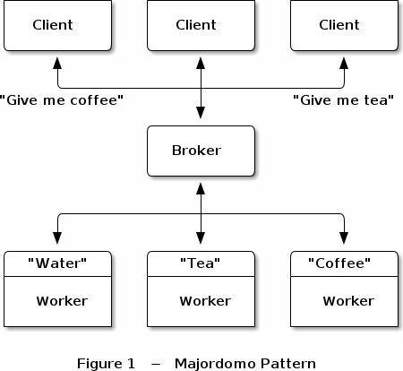
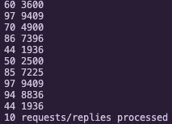

I have been using the zeromq library on and off over the past few years. I really enjoyed reading the guide. One of the gems of the guide is the majorodomo protocol (MDP). The aim of the protocol is to define a reliable service oriented architecture. The following image shows the MDP architecture:

In the architecture diagram above there are three services - Water, Tea and Coffee. A client can make a request to any of these services via the broker. Infact a client make a request to service that do not exist will be notified that no such service exits.
The reason I find MDP so powerfull is that if you have the worker API you can easily register your application (or just a function) to the MDP broker and start serving requests.
- It will be much easier than say deploying a
flaskordjangoapplication. - As a developer you do not have to learn how to create web application to start getting feedback from other users.
- The broker can become your single source to serve many different services.
To see MDP in action we need the following components. The link to corresponding files is also given.
- MDP broker.
- MDP client API.
- MDP worker API.
- zhelper, this contains helper functions used by the client and worker APIs.
Lets see the majorodomo protocol in action. We will create a worker which returns the square of the number sent to it.
import sys
from mdwrkapi import MajorDomoWorker
def main():
verbose = '-v' in sys.argv
worker = MajorDomoWorker("tcp://localhost:5555", b"square", verbose)
reply = None
while True:
request = worker.recv(reply)
if request is None:
break
# print(request)
num = int(request[0].decode())
# print(num)
reply = [str(num ** 2).encode()]
if __name__ == "__main__":
main()
The variable request, is of type list. Also, note that one can only send or receive bytes, that is why we perform the .decode() operation to convert it to a string.
The client application is as follows. This application sends 10 random numbers between 20 and 99 and receives it square. Both the sent message and the returned values are printed together.
import sys
import time
import random
from mdcliapi import MajorDomoClient
def main():
verbose = '-v' in sys.argv
client = MajorDomoClient("tcp://localhost:5555", verbose)
count = 0
while count < 10:
request = str(random.randint(20, 99)).encode()
try:
reply = client.send(b"square", request)
print(request.decode(), reply[0].decode())
time.sleep(1)
except KeyboardInterrupt:
break
else:
# also break on failure to reply:
if reply is None:
break
count += 1
print ("%i requests/replies processed" % count)
if __name__ == '__main__':
main()
You will see output similar to the image below.

Go Top
comments powered by Disqus